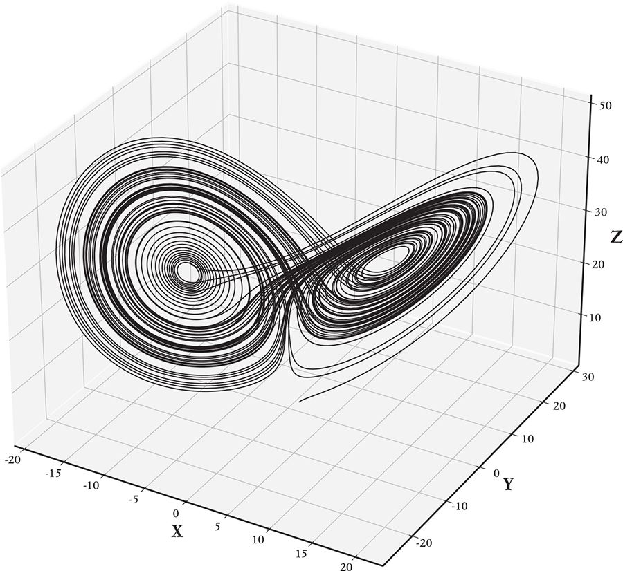

Complex consequences can arise from simple causes, especially when you allow the system you are looking at to be at a different scale from the elementary entities from which it is made.
Complexity economics is the application of ideas from complex systems to economics. But what is a complex system?2
In my physics courses at Stanford, I learned a great deal about motion, force and energy. My courses took a reductionist approach: The goal was to understand the fundamental rules that determine the interactions of simple things – like masses on springs or elementary particles – and study them in simple contexts. In celestial mechanics, for example, we learned how to calculate the orbits of two bodies, such as a single planet and the Sun, but more complicated situations, such as the orbits of three such bodies, were omitted, because the equations couldn’t be solved.
I couldn’t help but ponder the big questions that my courses were not addressing. I wanted something that was the opposite of reductionism. Given that all the fundamental forces of nature are simple interactions between relatively simple physical things, how can this lead to phenomena such as life and intelligence? How did matter spontaneously organize itself in the origin of life? How did evolution create such a remarkable thing as the human brain?
When I was in graduate school at UC Santa Cruz, I discovered cybernetics, which was the precursor of complex-systems theory. My friends and I read and discussed Norbert Wiener’s ideas about feedback and control, Claude Shannon’s theory of information, John von Neumann’s self-reproducing automaton and Erwin Schrödinger’s reflections about life and the mind.3 The big question we pondered more than all others was the mystery of self-organization: How can disorganized configurations of matter spontaneously become organized?
Later, at Los Alamos, I organized conferences and workshops on ‘Cellular Automata’, ‘Evolution, Games and Learning’ and similar topics, and invited leading scholars who were thinking about these things to visit, creating a hub of activity.4 The senior fellows at Los Alamos decided that this kind of work needed its own institution, free from the taint of a weapons laboratory. So, in 1984, the Los Alamos physical chemist George Cowan co-founded (with theoretical physicist Murray Gell-Mann) the Santa Fe Institute, and shortly afterward the phrase complex systems entered our vocabulary. I became affiliated with the Institute, and, in 1988, I started the Complex Systems Group at Los Alamos and recruited several outstanding postdoctoral researchers who later became leaders in the field. There are now thousands of scientists devoted to the study of complex systems, scattered across almost every discipline in the physical, natural and social sciences, including economics.
What is a complex system? By definition, a system is complex if it has emergent properties.5 I’ve already mentioned the example of the brain. We humans don’t just think – we are conscious, with a sophisticated model of ourselves, the world around us and how we fit into it. Consciousness isn’t present in the individual building blocks – it emerges from the interaction of billions of neurons. In human brains and other complex systems, emergence happens when building blocks are connected together to give rise to behavior qualitatively different from what any of the building blocks can do alone. Ant colonies are another classic example.6 Individual ants are simple creatures with only about 250,000 neurons, so the reasoning power of individual ants is extremely limited. But ants communicate through chemical signals and touch. This gives a colony of ants computational powers that individual ants lack, and through their collective interactions with one another they can do surprisingly sophisticated things. Ant colonies cultivate fungi, raise aphids, fight wars and take slaves. Individual ants can’t do these things. There is no Super Ant directing the colony – the queen is just an egg factory. Instead, these sophisticated collective behaviors emerge from the interactions of many ants.
Emergent behavior can be counterintuitive. The idea that thought and consciousness are purely mechanical processes, that can be explained from the bottom up, is so radical and difficult to fathom that it was not widely accepted until the twentieth century. Given that farming was not invented by Homo sapiens until what we term the agricultural revolution of about 10,000 years ago, how could simple creatures like ants have been doing something similar for millions of years?
Complex systems like the brain or an ant colony are called adaptive complex systems. They are distinguished from ordinary complex systems with simpler emergent behaviors by the fact that their properties have evolved over time, through a process of selection. Consciousness doesn’t emerge by simply hooking up neurons at random; they have to be connected in just the right way. It took evolution billions of years of trial and error to invent the human brain. Thinking in evolutionary terms is essential for understanding adaptive complex systems. And evolution is not just about biology; it applies to a broad range of adaptive complex systems, including economics and the other social sciences. Firms, for example, have to make profits or they quickly go out of business, illustrating that selection underlies the essence of how capitalist economies function. The study of adaptive complex systems has helped clarify the basic principles of evolution so that they can be applied more generally outside of biology.
Through science, things that appear to be random can be rendered predictable. Prediction is enormously useful because it allows us to make sensible decisions. We tend to take for granted the myriad ways that science has fundamentally changed our view of the world. The Trojan War from Greek mythology provides an example: After Agamemnon has gathered his troops to fight Troy, the wind refuses to blow, so his fleet cannot set sail. He consults Calchas, the seer, who tells him that he must sacrifice his beloved daughter Iphigenia to appease the goddess Artemis. He has his daughter killed, and the winds begin to blow.
Modern science casts a different light on this story. Unlike the ancient Greeks, we see no conceivable causal connection between Iphigenia’s sacrifice and whether or not the wind blows. Today, a father who acted as Agamemnon did would be regarded as utterly mad. A modern Agamemnon would simply consult the weather forecast, note the high-pressure zone hovering over Argos and tell his men to wait a few days until the wind started to blow again. Physics has transformed something formerly believed to depend on the whims of the gods into a predictable event whose causal mechanisms are well understood.
Fast forward to contemporary Greece, where an example shows that we still lack broad agreement about essential cause-and-effect relationships in economics. Since 2008, the Greeks have suffered one of the worst depressions in modern times. Greek GDP dipped by 30 per cent from its peak, unemployment reached 27 per cent, and in 2021 almost half of Greek young people (aged 15–24) were still out of work. Paul Krugman and many others have argued that all this suffering could have been avoided if only Germany had not forced Greece to adopt a policy of austerity (budgetary belt-tightening) just when economic stimulus was most needed.7 In contrast, Wolfgang Schäuble, the German finance minister, along with a host of prominent economists, insisted that austerity was unavoidable and the only way for Greece to become solvent again.
Who was right? There is no widely agreed-upon economic model that can answer that question. This is not unusual: While the majority of economists agree on some things, in many cases an array of different models make divergent predictions, leaving people free to choose the model they like best, based on ideology, politics and self-interest.8 We can break out of this stalemate only by finding models whose predictions are consistently good enough to gain a wide level of credibility.
My goal in this book is to set out a vision for how we can build models that make better economic predictions. Surprisingly, many economists do not agree on the importance of this goal. To quote two prominent Harvard economists, David Laibson and Xavier Gabaix,
Predictive precision is infrequently emphasized in economics research [ …] In this sense, economic research differs from research in the natural sciences, particularly physics. We hope that economists will close this gap. Models that make weak predictions (or no predictions) are limited in their ability to advance economic understanding of the world.9
When I emphasize this in my talks, economists often respond that the central goal of economics is to provide a conceptual framework for thinking about the world and evaluating policy choices. I wholeheartedly agree that having a conceptual framework is central, but, in my view, this only makes the quest for better predictions even more important. If we can’t make reliable predictions, then how do we know if the conceptual framework is correct?
It is easy to forget that prediction is interwoven into everything we do. To pick up a glass of water, your brain has to predict how your muscles need to be stimulated to get your hand to move to the glass and grasp it, then predict how to compensate for the weight of the glass as you bring it to your lips to drink. Similarly, every policy decision represents a prediction that the economy is likely to do better if that choice is made.
I should be clear about what I mean by the word prediction. Niels Bohr is said to have declared that ‘prediction is very difficult, especially if it’s about the future’. This remark seems ironic; aren’t all predictions about the future? Actually, no, not at all. Consider Boyle’s Law: In 1662, Robert Boyle invented a device that allowed him to control the volume of air inside a container and showed that the air pressure is inversely proportional to the volume. In other words, if you know the volume, you can predict the pressure, and vice versa. This is scientific prediction, true at any point in time – present, past or future.
Of course, many predictions are explicitly about the future. For instance, central banks and treasury departments use models to make predictions about GDP and unemployment. Models provide a sandbox where they can test policy options to understand how well they work and how they might be revised to work better. What happens if we raise interest rates? What happens if we require banks to hold more capital? What happens if we raise the minimum wage? Implement a universal basic income? Decrease taxes? Leave everything as it is? Bad models lead to bad decisions.
Predictions are also important because they test models and tell us whether we can trust them. Does the model we’re using capture cause-and-effect relationships well enough? If the model fails to make accurate predictions about the world as it is now, we can’t trust it to correctly answer the ‘what-if’ questions we need to pose when contemplating a change in policy. Unfortunately, even after decades of hard work by several generations of macroeconomists, Nobel Laureates in economics like Paul Romer question whether the effectiveness of macroeconomic forecasting has improved at all.10
Can we do better? Many argue that this is impossible for several reasons: As I’ve already explained, economics is about people, and, because people can think, their behavior is hard to predict. Or there may be fundamental limits: The economy may have intrinsic properties, such as market efficiency or chaos, that defy accurate prediction by any model, no matter how good.
We will never be able to predict the economy perfectly – far from it – but we can do much better than we are doing now. To return to Niels Bohr: Yes, prediction is difficult. But there are plenty of examples of good predicting, even of the future. Here’s one from my own experience, which has contributed to my belief that, if we change our approach, we can make much better predictions in economics.
My journey to complexity economics began more than four decades ago in an unlikely way – by using physics to beat the game of roulette.11 How this came to happen is a good example of ‘sensitive dependence on initial conditions’, a concept we will explore in more detail later. I grew up in Silver City, New Mexico, which was once the home of the infamous gunslinger Billy the Kid. When I was twelve years old, due to a complicated chain of circumstances involving Joe McCarthy, Frank Oppenheimer and a mythical gold mine in west Texas, an idiosyncratic young genius named Tom Ingerson moved to Silver City and became the sole member of the physics faculty at Western New Mexico University.12 Tom also started Explorer Post 114 – a branch of the Boy Scouts for teenagers – which I joined, along with my friend Norman Packard, who was the other science kid in Silver City. In addition to inspiring Norman and me to become physicists, Tom had entrepreneurial aspirations that infected us as well. Norman’s name will appear many times in this book – he is a remarkably creative person, and I have had the good fortune to have him as my partner in several endeavors.
Fast forward to the summer of 1975, when I was starting my third year of graduate school at the University of California at Santa Cruz, specializing in cosmology and doing research on galaxy formation. I spent the summer working for the Forest Service in Libby, Montana, where poker had just been legalized. I read The Complete Guide to Winning at Poker, began playing in the evenings and soon discovered that I was making more money gambling than I was in my day job. Meanwhile, Norman was spending the summer playing blackjack in Las Vegas; in our letters we debated whether poker or blackjack was the best way to supplement our incomes. When I met Norman at the end of the summer at the Greyhound bus station in Portland, Oregon, where he was finishing his undergraduate degree at Reed College, he convinced me that we could make our fortune using physics to beat roulette.
‘How is that possible?’ you might ask. A roulette wheel is designed to be a random-number generator. The croupier sets the central rotor spinning in one direction and the ball in the other. Initially the ball spins so fast that it runs along the outside of the beveled track, but eventually it slows and spirals into the center and bounces around on the numbered cups until it comes to rest in one. Because the relationship between the motion of the wheel and the motion of the ball seems unpredictable, the final number also seems unpredictable, making the sequence of numbers generated by a roulette wheel effectively random.13
Or is it? From the point of view of a physicist, roulette is a simple exercise in classical mechanics. According to Newton’s laws, the forces acting on an object, together with a measurement of its position and velocity, allow us to predict the object’s future motion. The main force acting on the ball is air resistance.14 About ten or fifteen seconds elapse between when the croupier releases the ball and when she closes the bets. This provides an opportunity to measure the position and velocity of the ball in one direction and the wheel in the other, use physics to make a prediction about where the ball will land and place bets.15 Doing this gave rise to a five-year undertaking we called The Project, which over its history enlisted the efforts of about thirty people. We organized a front company, Eudaemonic Enterprises, to buy sophisticated electronic parts. (Eudaemonia is an Aristotelian notion, which our ancient Webster’s Dictionary defined as ‘a state of felicity or bliss obtained through a life lived in accordance with reason’.) Our dream was that the fortune we would win at roulette would allow us to be independent of the system, so that we could start a eudaemonic science commune and do research on what has now come to be called complex-systems science.
Norman joined me at UC Santa Cruz to do his graduate work in physics. We bought a roulette wheel and installed it in the living room of our communal home, a sprawling California-style bungalow, where our work was punctuated by shared meals, intense intellectual discussions and wild parties. We solved the equations of motion, made thousands of measurements and confirmed that it was possible to predict roughly where the ball would land on the wheel. The subsequent bouncing motion was too complicated to predict, but after careful study we determined that when the ball leaves the track, it is unlikely to come to rest on the opposite side of the wheel. Our predictions were far from perfect, but they were still much better than random, giving us a substantial edge over the house.
But how would we cash in on these predictions in a casino? We needed to make our calculations in secret and quickly enough to place bets, but in 1976 there was no such thing as a personal computer, much less a smartphone. Following some insightful suggestions from our mentor Tom Ingerson, we designed and built the world’s first wearable digital computer. It was based on the 6502 microprocessor, the same one used to build the original Apple computer.16 With the technology available at the time, there was barely enough space to fit 3,000 bytes of program memory into the biggest box we could hide. I painstakingly hand-coded the program in machine language; this included an operating system (with perhaps the shortest floating-point arithmetic package ever written) and all the logic needed to perform the calculations and output the results. Our first wearable computer was named Harry, the middle name of its builder, Norman H. Packard. Finished in 1977, it was concealed under the armpit. The other armpit concealed a pack of a dozen AA batteries, which allowed the device to run for about an hour and a half. The user wore a complex body-harness carrying the computer, battery pack, wires, switches and antenna, along with vibrators that tapped out the outputs. Our second version was called The Sandwich because it had two PC boards, like two pieces of bread, glued together with a filling of microcrystalline wax. It was finished three years later and built into a shoe, which held the batteries, switches, antenna and vibrators. (Only users like me with large feet could operate it.)
At the roulette table, one teammate, usually me, measured the velocity of the ball and wheel by clicking switches embedded in his shoes and operated by his big toes. I drew on some aspects of my brief experience as a professional poker player, using the pseudonym Clem, acting stupid and betting small stakes. My computer calculated its prediction and transmitted a signal to an accomplice wearing a second computer – this one named Renata, in honor of its builder, Ingrid R. Hoermann. The computer and its vibrator were built into the armpit area of her bra (which provided a convenient strap to mount things on, and which we thought had security advantages); she then placed bets on numbers near where the ball was most likely to land. We consistently beat the house, achieving a 20 per cent edge, but due to chronic hardware failures and fear of broken kneecaps, we never managed to play for really high stakes and didn’t get very rich as a result.
However, I learned many valuable lessons. The Project taught me the scientific method, drilling it deep into my soul in a way that graduate school never could. We developed the theory, designed the experiment, executed some difficult engineering and tested our hypotheses both in the lab and in the casino. It also taught me that randomness is a subjective concept that depends on one’s state of understanding. Better science and better technology can make something that seems random become predictable.
The economy appears remarkably unpredictable, but might this just reflect our current state of misunderstanding? Economic variables – like GDP, unemployment and inflation – change all the time, in seemingly random ways. But maybe the economy is like a roulette wheel – perhaps its changes only seem random because we aren’t thinking about their causes in the right way. If we built better models, using new ideas and making better use of computers and big data, could we gain a new understanding that would allow us to make better predictions?
The major changes in the economy are called business cycles. During expansionary periods, GDP grows quickly and unemployment is low; during recessions, GDP falls and unemployment is high. These oscillations are irregular both in their timing and their intensity; in the United States, the average span of a cycle is about seven to ten years, though there is a great deal of variation. A central goal of macroeconomics is to understand what causes business cycles and how to avoid or at least reduce the intensity of recessions.
Remarkably, the underlying causes of business cycles remain controversial. As noted in the Introduction, changes in the economy fall into two basic categories: those that come from outside the economic system, and those that are generated within. The explanation offered by standard economic models is that changes in the economy are initiated by outside influences, which economists call shocks. To me, this word evokes the image of Zeus sitting on Mount Olympus, hurling lightning bolts at the Earth and disturbing the mortals below. Zeus is unpredictable, and the shocks arrive at random. The COVID pandemic provides an uncontroversial example where a huge economic change was caused by an outside shock.
The alternative explanation is that change comes from within, or, in more technical jargon, motion is endogenous: The economy changes on its own due to internal factors. In reality, it is a mixture of the two – sometimes the economy responds to outside factors, sometimes changes arise from within, and sometimes both types of causes act at the same time. Standard models, however, generally attribute all economic change to outside influences. According to these models, absent outside shocks, the economy would settle into a state of rest. It changes only because Zeus keeps shocking it, knocking it away from equilibrium. Shocks are random events from outside the economy that are by definition unpredictable. All that standard economic models aspire to do is to predict how the economy will respond to the shocks once they happen. This places a strong limit on their usefulness.
Yet there is a perfectly plausible explanation for how the economy can change from within. This is the beautiful mathematical concept now known as chaos, which is an important component of complex-systems theory. Economists in the 1980s and 1990s briefly experimented with the idea that chaos caused endogenous economic change and then they dropped it. To my mind, it was dropped for the wrong reasons, and it’s time to bring it back.
One evening in 1977, Robert Shaw, a fellow physics graduate student at Santa Cruz, appeared at our usual communal dinner in a state of excitement. He had just been introduced to meteorologist Edward Lorenz’s mathematical model, which featured a system of three simple equations and contained something called a strange attractor.17 Rob had programmed the equations on the computer – did we want to take a look? Rob tried to explain why he was so excited to Norman’s girlfriend, Lorna, who was not a physicist. The explanation went like this:
Models that describe how things change over time are known as dynamical systems. The basic idea goes back to Newton, who showed that you can predict the movement of any physical system if you know the state of the system and the forces acting on it. In physics, the state of the system is the positions and velocities of its components, which could be planets or roulette balls. We say the dynamical system is deterministic if no randomness is involved; that is, if the state at a given instant in time precisely determines the state at the next instant. As the state evolves, it traces out a curve, called the trajectory.
Most dynamical systems have what are called attractors that determine their long-term behavior. For example, due to air resistance, a pendulum will eventually come to a state of rest. This type of attractor is called a fixed point, for obvious reasons. For a slightly richer example, consider a grandfather clock, whose pendulum has a spring that keeps it moving. As long as the spring is wound, the pendulum swings back and forth at a consistent frequency; the attractor here is a pattern of oscillation, called a limit cycle, which looks like a closed loop: as the pendulum swings back and forth, a plot of its position vs velocity traces out a circle, which it goes around again and again.
As a physics graduate student, I had encountered quite a few deterministic dynamical systems in my textbooks. My view at the time was that the words deterministic and predictable were almost synonyms. But my experience with roulette had caused some doubts to tickle the back of my brain: How could a system like a roulette wheel – which, as a physical system, is by definition deterministic – also be a random-number generator? What was it about roulette that made it so much harder to predict than planetary motion?
As soon as dinner was over, we got in Rob’s 1957 Ford station wagon and drove to the university, so that we could use the physics department’s analog computer. Rob had programmed the Lorenz equations, which are a highly simplified model of atmospheric convection. They form a simple dynamical system with three equations relating three variables – three numbers labeled x, y and z representing the current state of the atmosphere. Its state can be visualized as a point with coordinates (x, y, z) in a three-dimensional space. We could see the action of the dynamical system by projecting this point on an oscilloscope screen and watching it move. Rob picked some initial values for x, y and z, pushed the Start button, and we watched the trajectory of the Lorenz equations unfold as x, y and z changed over time. What we saw was completely different from anything we had ever encountered in our textbooks. The trajectory traced out a beautiful pattern, like a butterfly whose wings fold back into each other, as shown in Figure 1.
The motion never stopped, and the pattern never repeated itself exactly. The pattern was an attractor – Rob made this clear by starting from several different initial conditions and showing that the trajectory always settled into the same shape – but the nature of this attractor was very different from the fixed points and limit cycles we were used to. It was appropriately named a strange attractor.
An attractor of this type is now called a chaotic attractor, and the motion it produces has come to be called chaos.18 Chaos is characterized by two essential properties: The first is sensitive dependence on initial conditions, and the second is endogenous motion, meaning that, even though there are no external shocks, the system never settles down to rest. That said, the word chaos can be misleading, because chaos in the mathematical sense does not imply chaos in the same sense that we use the word in everyday English. My PhD thesis was titled ‘Order Within Chaos’, and there are many circumstances in which order and chaos coexist. In fact, this is typical and will become important later when I argue that if we understand the chaotic properties of the economy, we can make better predictions.

The concept of chaos was anticipated by the brilliant French mathematician Henri Poincaré at the end of the nineteenth century. His inspiration came from studies of the three-body problem in celestial mechanics (for example, the motion of the Earth, the Moon and the Sun). He used sensitive dependence on initial conditions as a metaphor to explain how ‘fortuitous phenomena’ can have such a huge effect on our lives.19 But he was working in the days before computers, which made chaos almost impossible to study, so he couldn’t get very far. The concept of chaos was virtually forgotten until computers were invented and Lorenz rediscovered it.
To demonstrate sensitive dependence on initial conditions, Rob did a series of experiments. As before, he picked initial values for the state (x, y, z), hit Start to trace out a trajectory, then stopped the computer, freezing the pattern on the screen. Then he set the computer to approximately the original starting values of (x, y, z) and repeated the experiment. At first, the trajectory retraced itself, apparently exactly as before, but after a while it began to drift away and then diverged completely from the original trajectory. Remarkably, the experiment was not reproducible; that is, even though the initial values were almost the same, the outcome was very different – the final state ended up in a completely different place. This was really surprising, because the Lorenz equations are deterministic; the initial conditions should exactly determine all future values. So why wasn’t the experiment repeatable?
The difference arises because of the combination of uncertainty in the initial conditions and the unusual geometry of the Lorenz equations (and other systems with strange attractors). It is never possible to specify initial states with perfect precision. Every time Rob reset the computer, the initial state was a little bit different, even if this difference was imperceptible to us. For regular motion, where the attractor is a fixed point or a limit cycle, this difference doesn’t really matter: Even after a long time, the initial differences in the states remain imperceptible and the simulation is repeatable far into the future. But when the dynamics are chaotic, the geometry of the dynamical system stretches and folds the trajectories, amplifying these small differences exponentially, so that the final outcome eventually differs dramatically.
Rob also gave us a visceral illustration of the difference between regular motion and chaos. The computer output was put into a speaker, so that we could listen to the motion of the Lorenz equations in addition to watching it. For a fixed-point attractor, the computer was silent. For a limit-cycle attractor, the sound was a pure tone, like someone whistling a single note. But for a chaotic attractor, the sound was white noise, like the roar of a windstorm, suggesting its connection to fluid turbulence, which I will explain in a moment.
I had been wrestling with the difficulty of predicting roulette for more than a year, and seeing the Lorenz attractor caused an explosion to go off in my head. Because the ball eventually comes to rest, the motion of the ball has a fixed-point attractor. Nonetheless, on its way to its resting point, it displays sensitive dependence on initial conditions, which is why the final resting point is so hard to predict. While the ball is rolling on the track, the motion is reasonably predictable, but as soon as the ball falls onto the wheel, small differences in initial conditions can make a huge difference in its final resting point. When the ball hits the wheel, it might strike a cup head on and bounce backward, but if it hits just a millimeter farther, it might bounce forward and land in a different place. Tiny changes are greatly amplified. The roulette wheel is a good example of sensitive dependence on initial conditions. The sensitivity wasn’t strong enough to take away our advantage, but it didn’t make our job easy.
After Rob showed us the Lorenz equations, Norman and I were eager to get to work researching chaos as soon as possible. After eleven trips to Nevada, building and fixing roulette computers and taking heat in the casinos, we were burned out. While I loved cosmology, the problems to be solved were well known and had all been worked on by very smart people. In contrast, back then, many basic aspects of chaos were not yet understood; it was a wilderness waiting to be explored. I had always been interested in what causes order as opposed to disorder. Chaos is a mechanism for creating disorder in an orderly way, and it gave me the entrée I had been searching for.
Norman and I teamed up with Rob and a brilliant undergraduate named Jim Crutchfield and formed our own research group, which we called the UCSC Dynamical Systems Collective. Strange attractors were far from what other physicists were thinking about at the time. Although a few supportive faculty members thought the idea was interesting, no one knew enough to supervise our PhD work. We went ahead nonetheless, sharing authorship on all our papers and co-supervising each other.
We set out to prove Lorenz’s hypothesis that turbulence is caused by chaos. Most of us have experienced turbulence directly on plane flights – or in hurricanes, which are an example of fully developed turbulence. Or perhaps you have sat by a mountain stream, watching the water as it burbles and gyrates and spills over the fixed rocks in the stream-bed, moving by itself, as if the water had a will of its own. Changes in weather are also caused by turbulence; even though the continents and oceans are heated and cooled in a regular seasonal manner, the weather is irregular and difficult to predict.
In 1978, when we began our research, the prevailing theory was that turbulence happened because ‘things are really complicated’. Lorenz proposed the alternate theory that turbulence is caused by chaos. Though this is now well-accepted, it was far from obvious at the time. While his equations were derived to explain fluid flow (the motion of gases, like air, as well as liquids), they were based on extreme approximations. Most researchers studying turbulence at the time had never heard of chaos, and when they did, they were skeptical.
There is a broader lesson here. Although complex systems can be complicated, they don’t need to be complicated. The words complicated and complex are not synonyms! Complicated means that something has many moving parts, whereas complex means it exhibits emergent behavior – that is, it does things that are not easily predicted a priori. The Lorenz equations provide an excellent example of how a very simple set of equations, with only a few terms, can give rise to a complicated geometric object (the attractor) with complicated motion. The attractor is complicated but its underlying cause is simple. Even though the equations are simple, there is no formula that gives the answer – it is only possible to solve them by simulating them on a computer.
We of the Dynamical Systems Collective set out to invent new mathematical methods that could be used to identify and characterize chaos in the real world. In 1980, we wrote a paper titled ‘Geometry from a Time Series’, with Norman as the lead author, which took the first step toward accomplishing this.20 Experiments are rarely able to observe all the variables needed to fully determine the state of their underlying dynamical system. We found a way to reconstruct the missing information. For example, in fluid-flow experiments the data often consisted of the velocity of the fluid in a given direction at a given point in space. We showed how to use this kind of limited data to calculate key statistics about chaos and draw pictures of the underlying chaotic attractors. A couple of years after the publication of our paper, our methods were used to demonstrate the existence of chaos in chemical reactions and weakly turbulent fluid flows, and since then they have been employed thousands of times to show that chaos exists in many different phenomena, ranging from dripping faucets to heart arrhythmias to imperfect electronic control systems.
If you hit a rocking horse with a stick, the movement of the horse will be very different from the stick. The hits are the cause of the movement, but the system’s own equilibrium laws condition the form of movement.
A problem with prevailing macroeconomic models is that they have only fixed-point attractors, so if the model economy is left alone it settles into a state of rest and stays there forever. This implies that all changes in the economy are driven by events outside the economy. To explain why the economy changes, economists have to postulate the existence of shocks that knock the model away from equilibrium. They cannot predict the shocks, they can only predict how the economy relaxes back to equilibrium. The Swedish economist Knut Wicksell, quoted above, uses the analogy of a rocking horse being struck by a stick: The rocking horse is like the economy and the blows from the stick are like the shocks. Absent further shocks, the economy would settle into a static equilibrium, but the blows from the stick keep coming, and the horse continues to rock as a result.
There have long been dissenters who felt that a substantial component of the economy’s changes come from within. In the 1960s and 1970s, several prominent economists proposed theories for business cycles based on deterministic models with limit cycles.22 In these models, the economy is like a rocking horse ridden by a child, who pumps it back and forth and keeps it going indefinitely – like the spring powering the pendulum in a grandfather clock. The problem with limit cycle-based models is that their business cycles are too regular. These models produce limit cycles that are perfectly periodic, like the motion of a rocking horse, whereas real business cycles are highly irregular; the intervals between cycles can range from several decades to only a few years. Models with limit cycles can be made less regular by adding shocks, but it’s still hard to produce behavior irregular enough to be plausible (though this point has recently been contested).23
As the idea of chaos became better known, a few economists asked whether the irregular oscillations of the economy might be due to chaotic dynamics. If it’s true for the weather, they reasoned, why not the economy? Unlike limit cycle–based explanations, chaos automatically generates irregular behavior, and it’s easy to find examples of simple chaotic dynamical systems whose output resembles business cycles. In 1981 Richard Day proposed a modification of an economic-growth model with chaotic dynamics, and in 1986 Michele Boldrin and Luigi Montrucchio gave another example.24 These models were highly simplified and required unrealistic parameters to generate chaos, but they at least suggested that the idea was plausible. But did chaotic dynamics figure in real economies?
This question led the economists William ‘Buz’ Brock, Blake LeBaron and José Scheinkman to formulate a test for identifying chaos in economic data, building on methods we had developed in the Dynamical Systems Collective. They applied their test to a long historical record of daily changes in the Dow Jones Index and showed that there were no convincing signs of it.25 A few other papers examined different economic data and got similar results. From the point of view of mainstream economists, this closed the case: Since there was no empirical evidence for chaotic dynamics in the data, chaos must be irrelevant for economics.26
I like Brock, LeBaron and Scheinkman’s method – in fact my collaborators and I later built on it to debunk the idea that simple chaos explains fluctuations in brainwaves.27 However, I think the interpretation of their results was wrong. They don’t rule out the possibility that chaotic dynamics underlies economic dynamics.
This misinterpretation stems from a subtle but profound point that is not widely understood: Chaos can be simple or complicated. Simple chaos and complicated chaos lie at two ends of the same spectrum, but their behavior is quite different. In simple chaos (like the Lorenz equations), the motion can be described using only a few variables. For complicated chaos, like the weather, many factors act independently, and many variables are required to describe the motion. For instance, models for predicting the weather depend on the air temperature, pressure, humidity, cloud cover, wind speed and direction, not to mention the local topography, the height and type of the clouds, the current amount of rain, the temperature of the land, and so on. Because the list of numbers needed to describe the current state of the weather is long, we say it has many degrees of freedom. While the Lorenz equations were meant to describe something about fluid turbulence, they do not even begin to describe all the complicated features of real weather. There is a continuum between simple models like the Lorenz equations (which have only three degrees of freedom) and the very complicated models used to predict real weather (which have billions of degrees of freedom). In my PhD thesis, I was the first to study the progression from simple chaos to complicated chaos and show how chaotic behavior changes and becomes more turbulent as the number of degrees of freedom increases.
The standard economics ‘rocking horse’ model is an example of a family of models widely used throughout applied science and engineering called a random process (in other fields, the shocks are usually called noise). In a random process, the noisy inputs are modified by deterministic components of the process – just as the rocking horse responds to the blows by the stick that shape the resulting behavior. Like complicated chaos, random processes have many degrees of freedom. This can make the two very difficult to tell apart.
The test that Brock, LeBaron and Scheinkman applied to the Dow Jones index was essentially a measurement of the number of degrees of freedom. If they had found few degrees of freedom, they would have been able to claim they had found chaos, which is the only way to generate random-looking behavior with low degrees of freedom. But they found high degrees of freedom, indicating that either the behavior of the Dow Jones index is a random process or it is complicated chaos – they couldn’t distinguish between the two because, based on historical data alone, complicated chaos is impossible to distinguish from a random process. However, their results were not interpreted this way, but were instead taken to mean that chaos was not present, period. If they had applied their test to the weather, it would have yielded the same answer, even though we know that the weather is chaotic, for two reasons. First, we can do experiments with fluids and study the transition to turbulence. At the transition point, the motion has only a few degrees of freedom, and it becomes possible for tests like that of Brock, LeBaron and Scheinkman to show this. Second, we can simulate the equations that describe the weather on digital computers and show that chaos is present, like Lorenz did. It’s far easier to demonstrate the presence of chaos in a model than it is for real data, and this is particularly true for complicated chaos.
In fact, it would have been really surprising to see simple chaos at work in economic data. The economy is inherently complicated, with many different interacting factors. Even if much of economic change is endogenous, much is not. Moreover, because the economy changes slowly, in timescales measured in years, there is effectively very little data to analyze. There have been only about ten or twelve business cycles since World War II, whereas methods for detecting even the simplest kind of chaos require thousands of cycles.
There is another strong argument for the presence of chaos in economics – one that few economists are aware of. David Ruelle and Floris Takens, who were part of a community of mathematicians in the 1970s who built on Poincaré’s early insights and rediscovered Lorenz’s work, proved a remarkable theorem which says that chaos is the likely explanation of complex-looking behavior.28 The theorem is too technical to describe here, but it basically says that when dynamical systems cause endogenous motion (like limit cycles), as this motion gets complicated, it inevitably becomes chaotic (meaning that it has sensitive dependence on initial conditions).29
The same argument applies to the economy. If the economy produces endogenous motion that isn’t a simple limit cycle or a combination of limit cycles, it must be due to chaos – there’s really no other option. As noted, the models showing chaos that were proposed in the early 1980s were unrealistic to start with. In models based on more plausible behavioral assumptions – i.e., complexity-economics models – chaos becomes more common.
In 1981 I finished my PhD in physics at Santa Cruz and began looking for a job. But my specialty was now chaos. Even though our work on dynamical systems was getting a lot of attention, I didn’t fit neatly into any of the academic boxes for physicists, so there were essentially no academic jobs for which I was a viable contender. Academia is, unfortunately, a world of disciplinary silos. Our research fell between the cracks – or more accurately, the chasms – that exist between disciplines. Physicists thought what we were doing was interesting, but it was utterly different from what any of them did, and there were no other disciplines doing this kind of work.
I found my job by chance: I happened to be reading a biography of J. Robert Oppenheimer when I saw a poster advertising the J. Robert Oppenheimer Fellowship at Los Alamos National Laboratory. I had grown up in New Mexico and was eager to return. Despite my misgivings about the fact that Los Alamos is, among other things, a weapons-research laboratory, I decided to apply. During the interview, they told me I didn’t have to do any military research and could work on anything I wanted, and I became an Oppenheimer Fellow at the newly formed Center for Nonlinear Studies.
The intellectual environment I found myself in was remarkable. There were no disciplinary boundaries. The only questions people asked about your work were, ‘Is it interesting?’ and ‘Is it useful?’ It’s no coincidence that many of the best papers in nonlinear dynamics (the broader field that chaos belongs to) were written there. The Manhattan Project had enlisted the best mathematicians and physicists in the world, and some of my heroes from that era, such as Stanislaw Ulam and Nicholas Metropolis, were still there. I had regular conversations with the mathematical physicist Mitchell Feigenbaum, a pioneer of chaos theory. Los Alamos was perhaps the only place in the United States where working on chaos was considered a perfectly normal thing to do, and with my help and that of others it became one of the places that the science of complex systems emerged from.
Chaos, which explains how randomness emerges from order, is only a small subfield within complex systems. Let’s now zoom out to discuss the bigger picture.